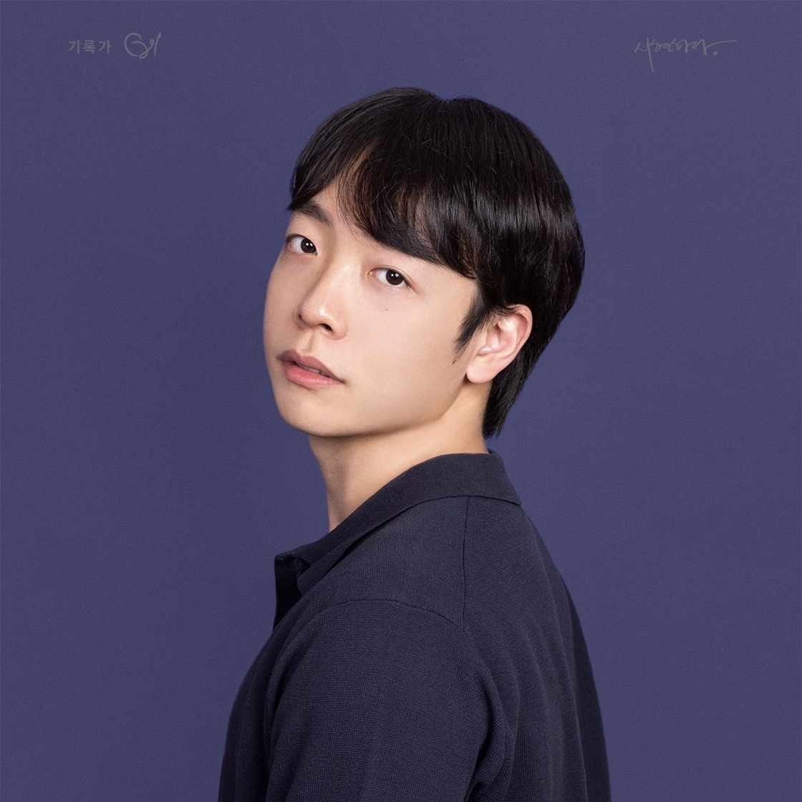
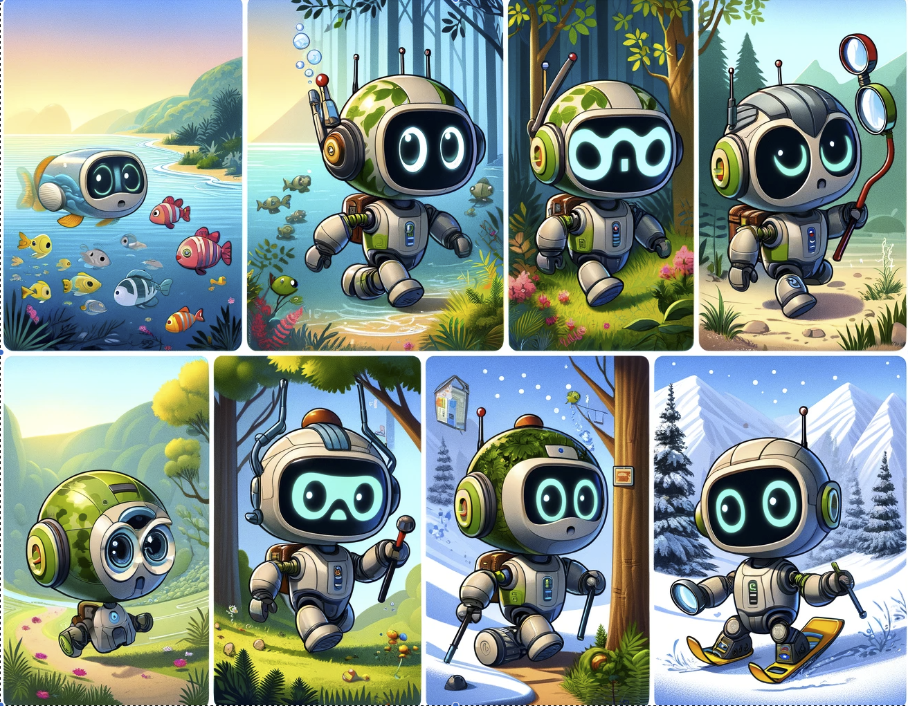
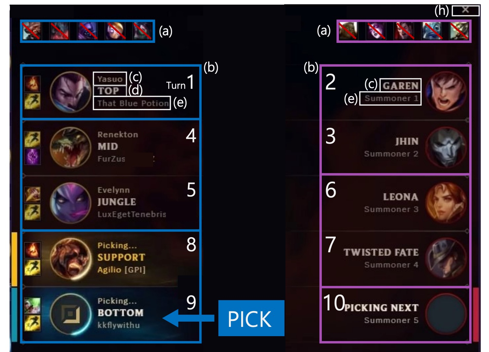

|
Hyunseung Kim
I am a 2nd year Ph.D. student at Data and Visual Analytics Lab (DAVIAN-LAB), advised by Prof. Jaegul Choo at Korea Advanced Institute of Science and Technology (KAIST). I received my B.S. in Computer Science at Korea University in 2021.
My overarching research objective is to develop intelligent agents capable of autonomously acquiring knowledge and adapting their behavior through interactions within the environment. To pursue this goal, my primary areas of research focus: (i) Unsupervised Reinforcement Learning, (ii) Skill Discovery, (iii) World Models, and (iv) Robotics.
Feel free to send me an e-mail if you want to chat or collaborate with me!
Email /
CV /
Github
|

|
|
Sep '23
|
Two papers (DISCO-DANCE and PLASTIC) are accepted to NeurIPS 2023!
|
|

|
DISCO-DANCE: Learning to Discover Skills through Guidance
Hyunseung Kim*,
Byungkun Lee*,
Hojoon Lee,
Dongyoon Hwang,
Sejik Park,
Kyushik Min,
Jaegul Choo
NeurIPS, 2023
project page
We introduce an Unsupervised Skill Discovery algorithm designed to provide direct guidance to encourage exploration.
|
|
|
PLASTIC: Improving Input and Label Plasticity for Sample Efficient Reinforcement Learning
Hojoon Lee*,
Hanseul Cho*,
Hyunseung Kim*,
Daehoon Gwak,
Joonkee Kim,
Jaegul Choo
SeYoung Yun,
Chulhee Yun,
NeurIPS, 2023
paper
We introduce PLASTIC, a simple-to-use algorithm that addresses the loss of plasticity phenomenon and enhances sample efficiency in reinforcement learning.
|
|

|
DraftRec: Personalized Draft Recommendation for Winning in Multi-Player Online Battle Arena Games
Hojoon Lee*,
Dongyoon Hwang*,
Hyunseung Kim,
Byungkun Lee,
Jaegul Choo
WWW, 2022
paper
/
code
/
poster
Developed a personalized champion recommendation system in League of Legends with a hierarchical transformer architecture.
|
This template is a modification to Jon Barron's website.
|
|
{kind=link}